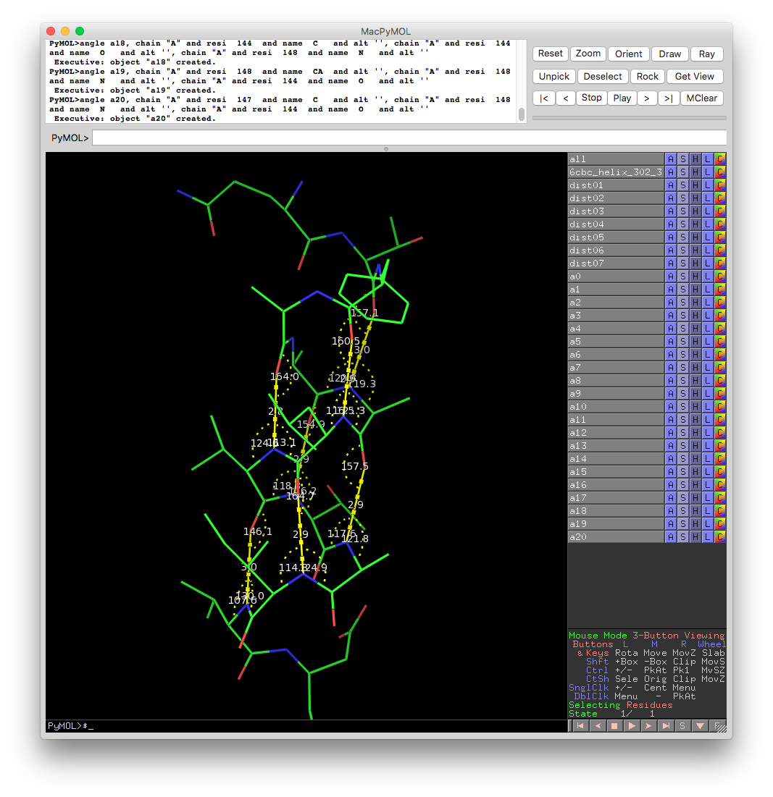

Description
It is a tool to generate secondary structure annotation in various formats using pdb file. When HELIX/SHEET records are present in input pdb file, no searching occurs, they are used as source of information about protein secondary structure. To force automatic detection of protein secondary structure elements, one needs to remove them from input file.
There are several methods available to search protein secondary structure:
- ksdssp (default): uses KSDSSP
- dssp: slightly different method by Nat Echols, stand-alone tool is mmtbx.dssp
- from_ca: tries to find protein secondary structure from position of C-alpha atoms. Finds more SS elements than other methods, works better when the structure is distorted. (author Tom Terwilliger).
- cablam: CaBLAM uses CA-trace geometry to validate protein backbone. Since the CA trace is more reliably modeled from low-resolution density than the full backbone trace, CaBLAM can identify modeling errors and intended secondary structure elements in low-resolution models. (author Christopher Williams).
Output format:
- phenix (default): Phil parameter file suitable to use with all Phenix tools except phenix.refine
- phenix.refine: Phil parameter file suitable to use with phenix.refine
- pdb: HELIX/SHEET records in PDB format
- pymol: output pymol script which can be loaded in pymol. It will display model with hydrogen bonds:

Command line usage examples
% phenix.secondary_structure_restraints model.pdb
% phenix.secondary_structure_restraints model.pdb format=phenix.refine
% phenix.secondary_structure_restraints model.pdb ignore_annotation_in_file=True
% phenix.secondary_structure_restraints model.pdb search_method=from_ca format=pdb
GUI
Graphical user interface is currently available under phenix.refine GUI, "Refinement settings" tab, select "Use secondary structure restraints" checkbox and click "Select Atoms" button.